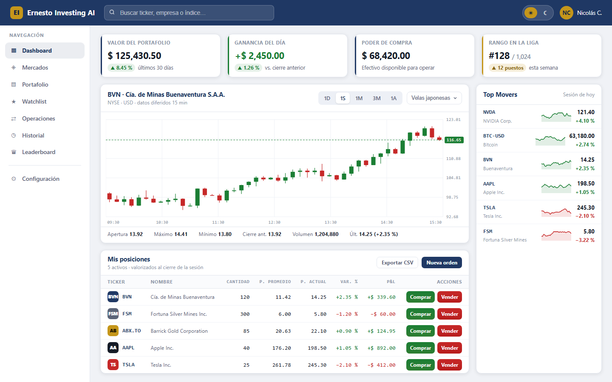
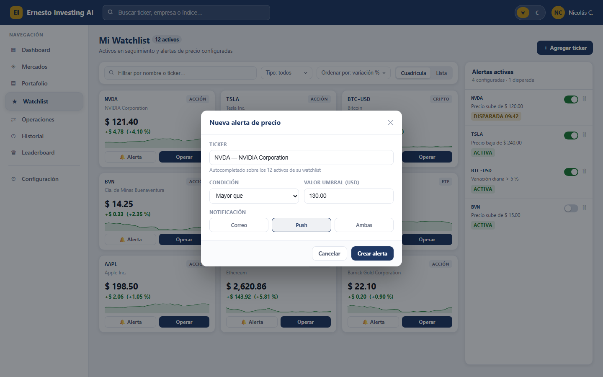
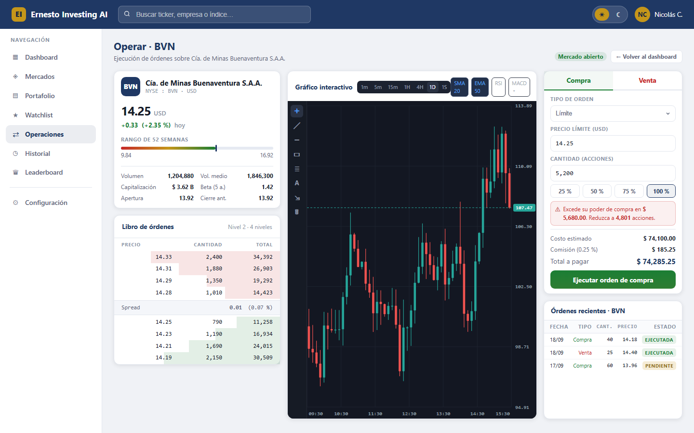
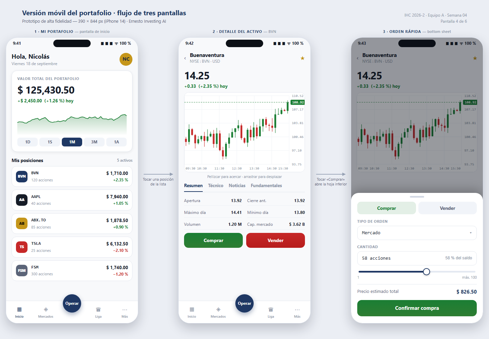
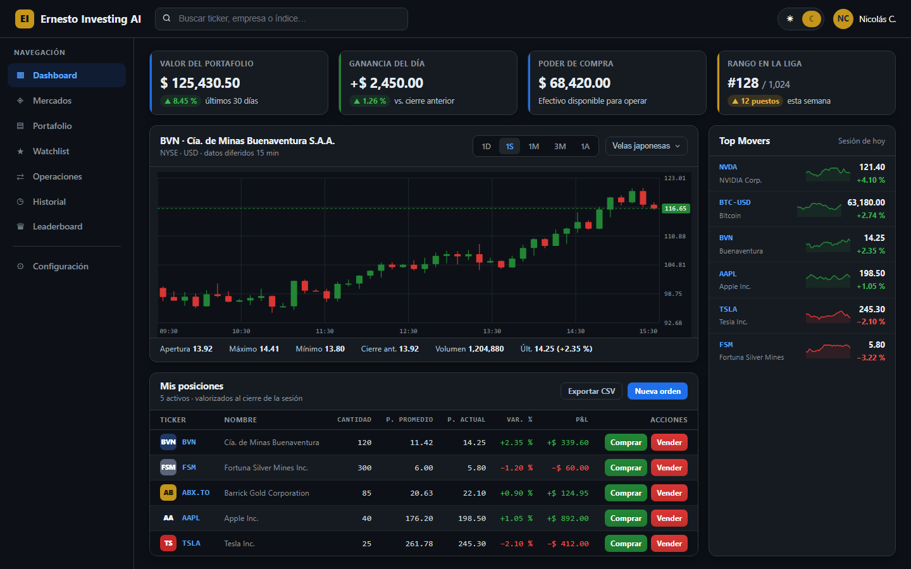
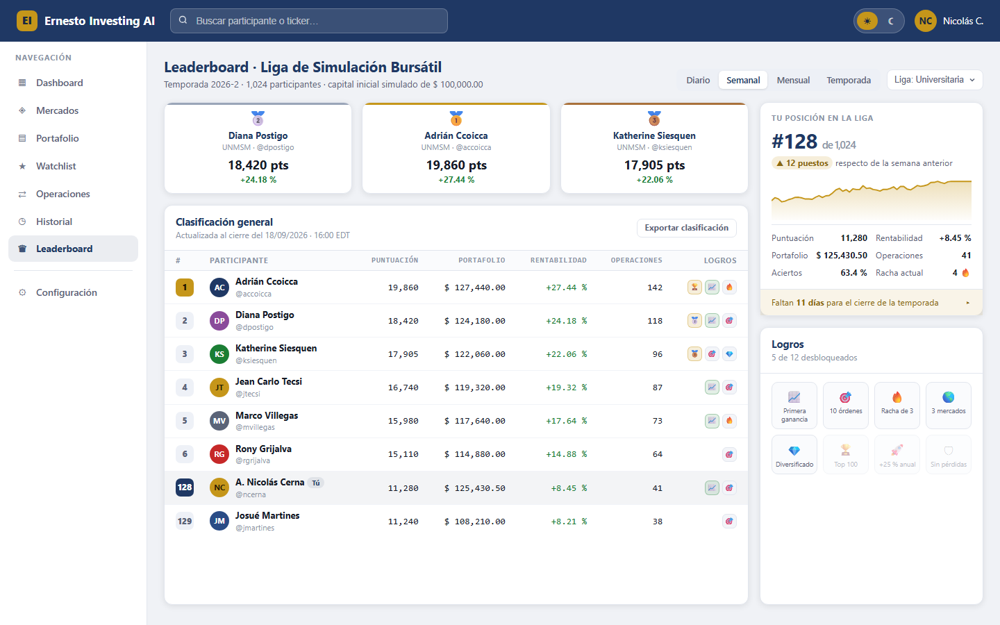

Prototipo de alta fidelidad del Dashboard Bursátil — Guía de Laboratorio 04, Interacción Hombre-Computador
| Recurso | Enlace |
|---|---|
| Archivo de Figma (vista) | figma.com/design/5knvURBDiuYFFfjWi9aWve |
| Prototipo navegable (Figma Prototype) | figma.com/proto/5knvURBDiuYFFfjWi9aWve |

Pantalla 1Dashboard principal · tema claro KPI, gráfico de velas, Top Movers y tabla de posiciones.
Pantalla 2Watchlist y alertas Cuadrícula de activos, alertas activas y modal de nueva alerta.
Pantalla 3Ejecución de órdenes Libro de órdenes, gráfico interactivo y formulario con validación.
Pantalla 4Versión móvil del portafolio Tres vistas de 390 × 844 px conectadas por flujo.
Pantalla 5Dashboard en modo oscuro Variante nocturna con paleta GitHub Dark / TradingView Dark.
Pantalla 6 · Tarea ALeaderboard de la liga Ranking, puntuación, portafolio simulado y logros.| Origen | Disparador | Destino |
|---|---|---|
| Dashboard | Clic en «Watchlist» del menú lateral | Watchlist y alertas |
| Watchlist | Clic en «Operar» de una tarjeta de activo | Ejecución de órdenes |
| Dashboard | Clic en «Comprar» o «Vender» de una fila de la tabla de posiciones | Ejecución de órdenes |
| Dashboard | Conmutador de tema (☀ / ☾) de la barra superior | Dashboard en modo oscuro |
| Dashboard modo oscuro | Conmutador de tema (☀ / ☾) | Dashboard · tema claro |
| Dashboard | Clic en «Leaderboard» del menú lateral | Leaderboard de la liga |
| Dashboard | Clic en «Portafolio» del menú lateral | Versión móvil del portafolio |
| Todas las pantallas | Clic en el logotipo de la barra superior | Dashboard (navegación de retorno) |